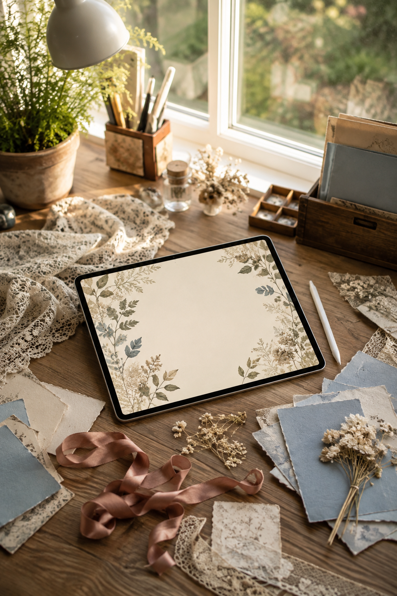
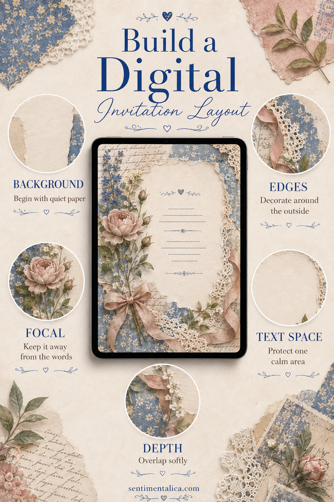

A digital invitation does not need to look like a flat template. Scrapbook artwork can give it torn edges, paper texture, botanical detail, and the feeling of something assembled by hand. The best result still behaves like an invitation: the words are calm, the hierarchy is obvious, and the decoration knows where to stop.
You can use any design tool that lets you arrange images and type. The important choices are visual, not technical.

Begin with one visual world
Choose a small group of elements that genuinely belong together: perhaps cream paper, dusty blue florals, faded rose ribbon, and scanned lace. Do not start by importing the entire scrapbook kit. A limited selection makes the invitation feel designed rather than emptied onto a canvas.
Decide on three words for the mood, such as quiet garden supper, romantic birthday tea, or old-library evening. Keep only artwork that supports those words.
Lay down the quietest background
Use a soft paper texture or pale painted sheet as the full background. It should be the least demanding element. If it contains strong flowers, frames, or writing everywhere, there will be nowhere comfortable for the invitation wording.
A little texture is enough. The center should remain calmer than the edges.
Decorate around the outside
Build from the corners inward with torn paper, lace, leaves, labels, or botanical fragments. Vary the edge shapes so the composition does not resemble a rigid frame. Let some pieces disappear beyond the canvas; this makes the layout feel larger and more natural.
Keep the central third open. That protected space is not empty. It is the part doing the most important work.

Place one focal element
Choose one flower, painted object, crest-like cluster, or small landscape as the visual anchor. Place it away from the main wording, usually low left, low center, or in one upper corner. A focal element behind the event title creates competition even when both are beautiful.
If you want several flowers, overlap them into one cluster so the eye reads them as a single object.
Shape the text space
Arrange the words by importance. The guest should understand the event, date, and place in that order without hunting. Use one expressive type style for the emotional line or name, then a simpler style for practical details.
Do not center every line automatically. Follow the open shape created by the artwork. A left-aligned text block can feel calmer beside a botanical edge; centered type works well inside a symmetrical frame.
Add depth without fake bulk
Use small, soft shadows where digital papers overlap. Change the angle or opacity slightly between layers. Avoid heavy black shadows, dramatic bevels, and glossy effects; they make soft paper artwork look plastic.
Zoom out until the invitation is roughly phone-sized. If the wording becomes difficult to read, simplify the decoration before enlarging every line. The invitation should still feel clear at a glance.
Finally, hide one decorative layer and compare. If the design becomes easier to understand, leave that layer out. Digital composition is generous because nothing has to be peeled away; editing is part of the making.
Find more gentle layout ideas in the Sentimentalica journal.